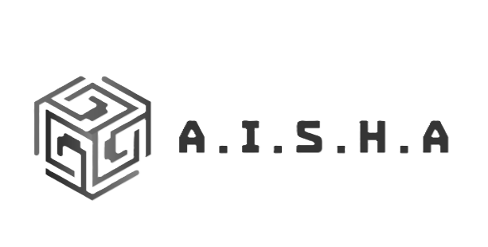
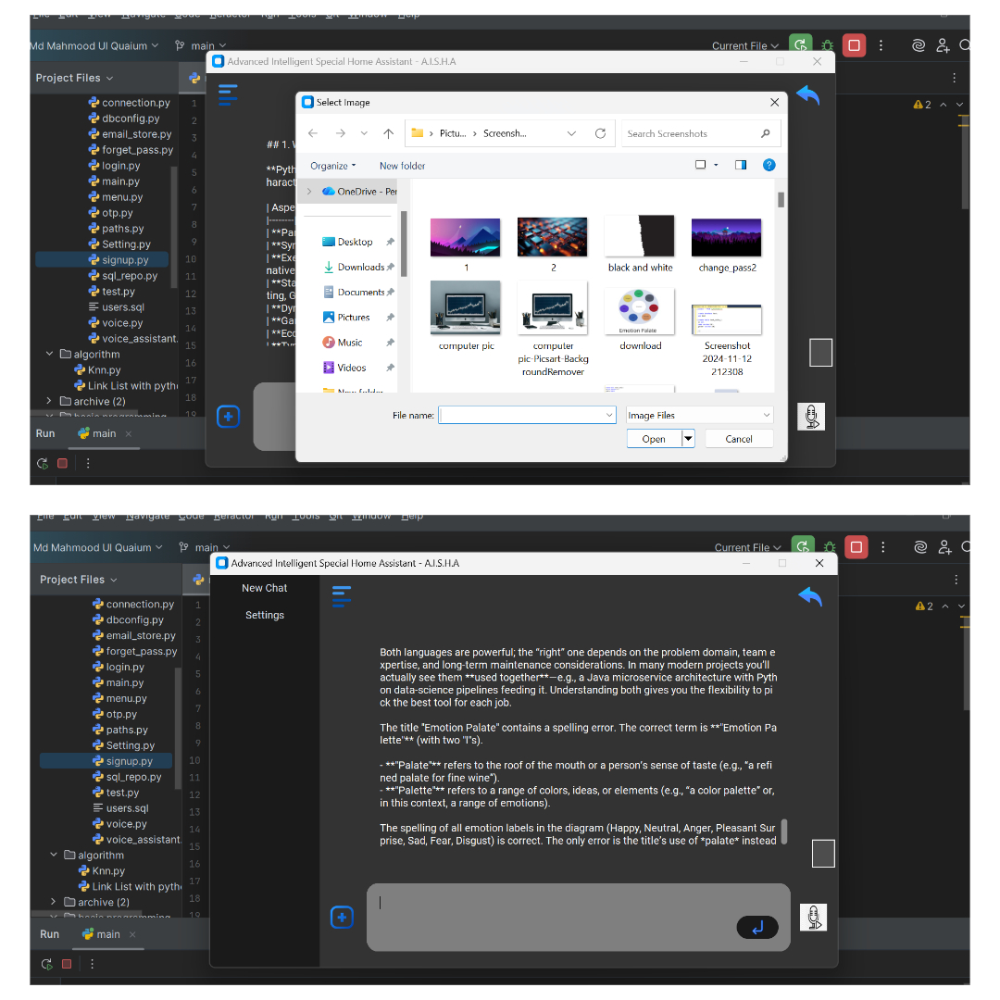
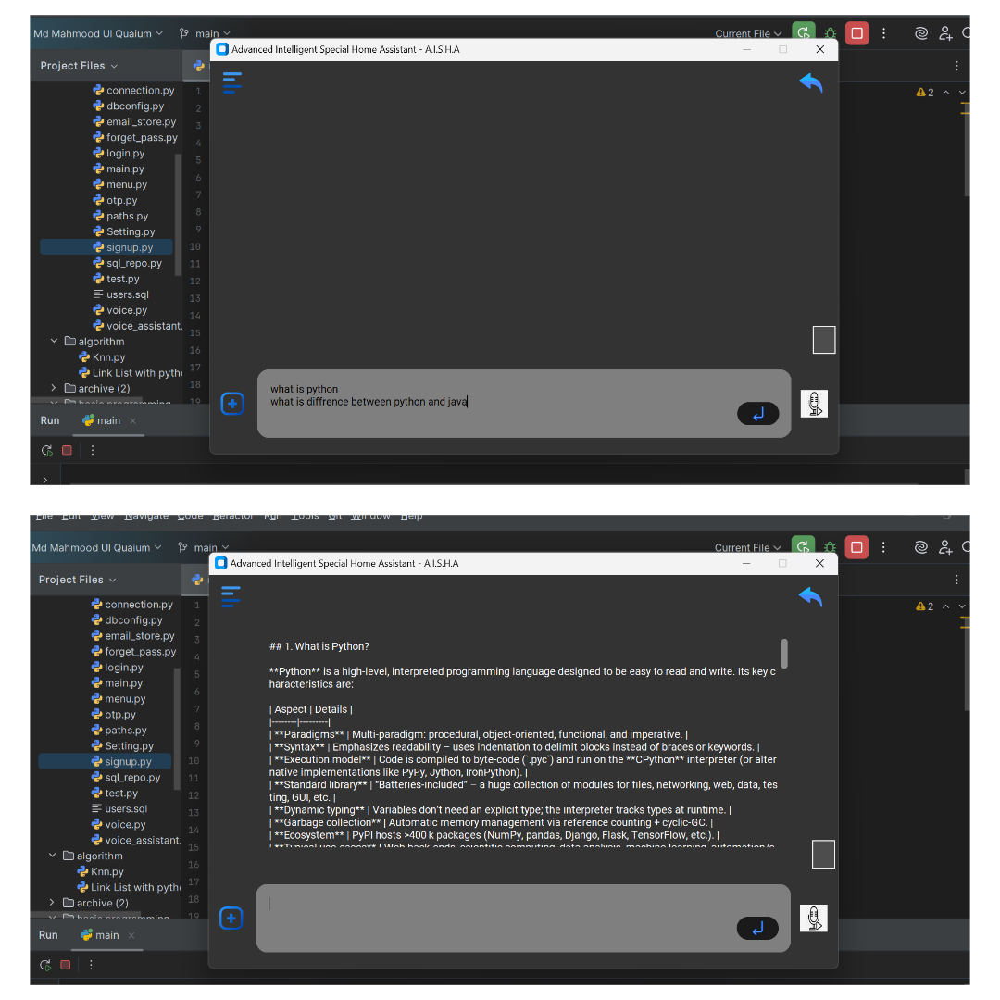
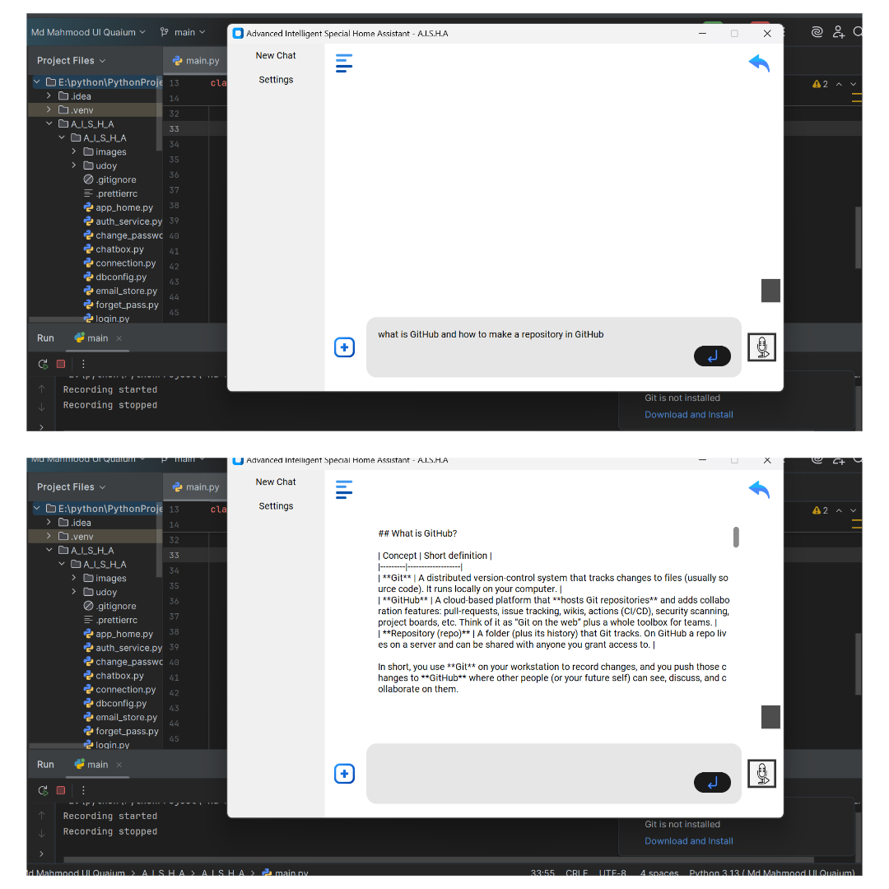
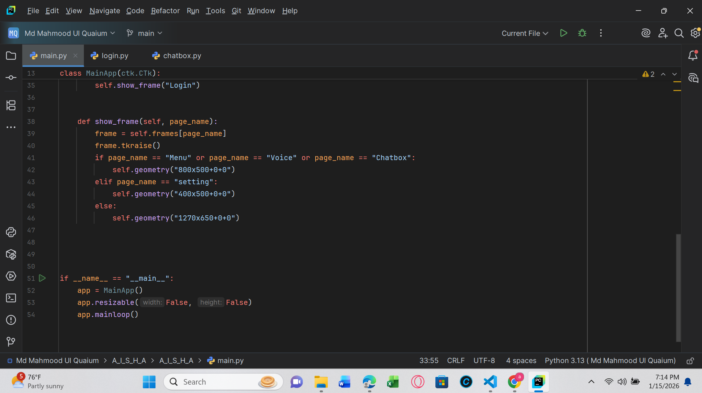
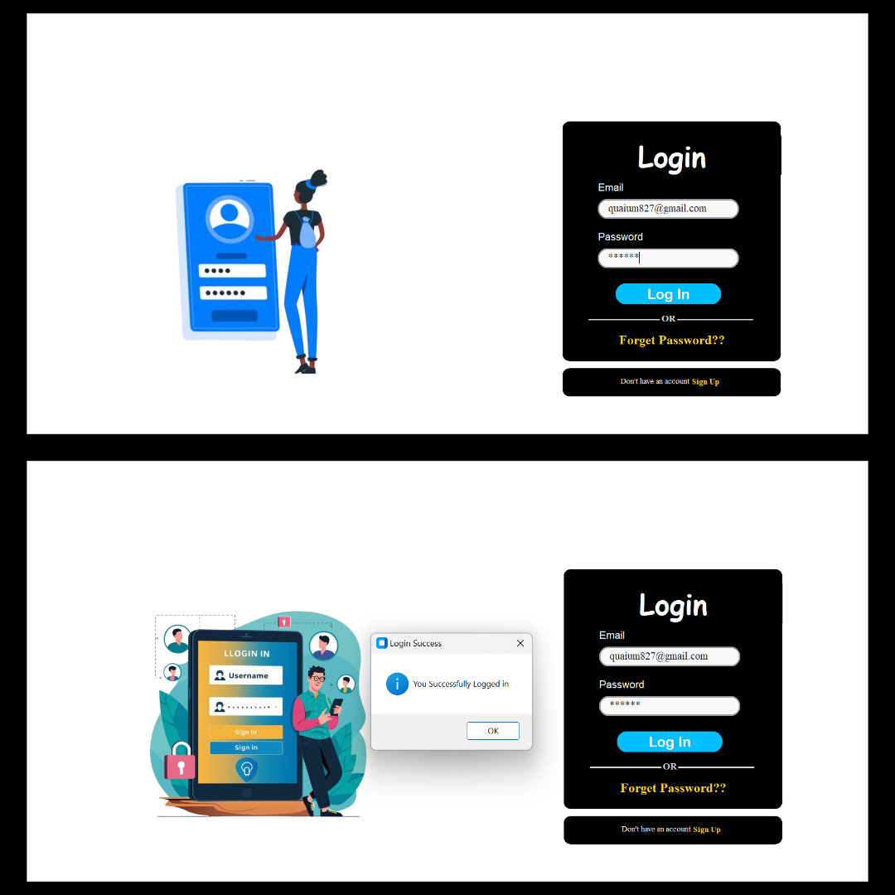

An intelligent, multimodal home-assistant system aimed at simplifying daily tasks through Image, Text, and Speech processing.
[Md. Mahmood Ul Quaium
CSE 080 08541]
[Mohammad Nizam Uddin
CSE 080 08534]
[S. M. Abir Hasan
CSE 080 08540]
2026-01-19
Project Overview
A.I.S.H.A
Advanced Intelligent Special Home Assistant
Modern home users struggle with fragmented tools for daily digital tasks. There is a lack of a unified assistant that can seamlessly understand and process diverse input types—images, text, and speech—to simplify information retrieval and task execution in a single interface.
To create a responsive, user-friendly desktop assistant that centralizes multimodal interaction. A.I.S.H.A acts as an intelligent bridge between user intent and digital action, delivering clear, actionable outputs regardless of how the request is initiated.
Provide three intuitive input modes (image, text, speech)
Offer fast, relevant AI-generated responses via local LLM
Store and manage interaction history securely
Local Desktop Application (tkinter)
AI Reasoning via Ollama
Persistent Storage with MySQL
A.I.S.H.A Project
System Architecture
Multimodal Interaction
Image • Text • Speech

User provides an image file; A.I.S.H.A interprets visual context to offer guidance or extraction.
Use Cases

Standard input where users type specific queries. A.I.S.H.A processes prompts via local LLM.
Use Cases

Spoken audio is captured and converted to text using Google Speech Recognition API.
Use Cases
Implementation
Technology Stack
Core Architecture & Tools
VS Code
Integrated Development Environment
Python 3.x
Backend Logic & Processing
tkinter
Custom GUI Framework
MySQL
Data Persistence & History
Ollama
Local LLM Integration
SpeechRecognition
Google Speech API
main.py — A.I.S.H.A


Results & Validation
Demonstration Gallery
Live Execution Results
Action: A.I.S.H.A analyzes uploaded image content.
Result: Contextual identification and relevant guidance provided to user.
Action: User submits complex text query via UI.
Result: LLM processes prompt and generates accurate, formatted text response.
Action: Voice command captured and transcribed.
Result: Correct transcription displayed and associated task executed instantly.
Action: Reviewing history logs and settings.
Result: MySQL data retrieved accurately; UI maintains state across sessions.
Project Wrap-up
Summary & Future Scope
Achievements • Roadmap • Conclusion
Unified multimodal inputs (Image, Text, Speech) in one interface.
Developed responsive custom desktop UI using tkinter.
Integrated Local AI (Ollama) for secure, offline-capable reasoning.
Implemented reliable data persistence layer with MySQL.
Clean architecture separating UI, Business Logic, and Data Services.
Reusable prompt engineering pipeline across input types.
Robust Speech-to-Text integration via Google API.
Text-to-Speech (TTS): Add voice responses for full conversational loop.
Smart Home IoT: Integrate with home automation APIs.
Wake Word: Implement "Hey Aisha" activation.
Context Memory: Improve long-term conversation retention.
A.I.S.H.A demonstrates a practical, extensible foundation for personal AI assistance. By combining visual, textual, and auditory understanding, it paves the way for more natural and efficient human-computer interaction in daily life.
Advanced Intelligent Special Home Assistant